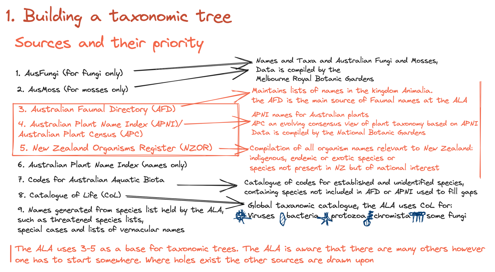

Data scope pertains to the type of data needed for your project. Your research question will help guide the scope of data you need.
Consider the following in reference to your research aim:
- What is the taxonomic unit of your research interest? A broader genera or a species? Is it threatened?
- What is the spatial scale of your project? The entire country? A specific conservation area?
Your data scope may change according to the availability of data for certain research interests. In some instances, rare species tend to have considerably fewer records.
Taxonomic scope
Where the aim of the study is to gather data on a specific taxonomic unit. This could be a threatened species or a broad taxonomic group. The download query is performed using the scientific name, or, name of the taxonomic group.
Spatial scope
Where the aim is to obtain data for targeted taxa in a given location. In this case, the region name or area boundaries can be used to delimit the area of interest. The example below shows all Insecta orders in the state of Tasmania in Australia
Naming authorities
Choosing your taxonomic naming authority
Naming authorities are the different organisations that provide updated or revised lists of species taxonomic splits or taxonomic history following new research. Species names in these lists vary as there may be disagreements as to what distinguishes a new genus, species, subspecies etc. Open source repositories are often provided with conflicting taxonomies that leaving them open to a degree of error.
Choosing a naming authority is, then, one one way to make decisions surrounding taxonomic categorisations of open source biodiversity data. However, deciding what naming authority to use can be both challenging and time consuming. What you choose will depend on your own taxonomic research and evaluation, but, also, your scope. A spatial scope will have many species and may need multiple naming authorities. On the other hand, choosing a naming authority can impact your scope by shrinking or enlarging datasets.
Checking changes in the taxonomy of your focus species can be helpful when interpreting old data which may have species names you don’t recognize, or, when using data citing a different naming authority to another data set you wish to consolidate it with. This can be achieved by consulting the literature.
Most taxonomic society groups also release annual updates on taxonomy.
In Australia, the Australian Plant Name Index (APNI) is the primary naming authority for plants. With the Australian Faunal Directory (AFD) the main taxonomic catalog for animal species. These authorities provide a list of accepted and authoritative names as a template. If you’re unsure what naming authority to use and you’re looking at Australian species, the APNI and the AFD are a good place to start, especially if the data you’re investigating covers a wide range of taxa. If you’re investigating specific taxa it’s worth checking when the taxonomy was last updated in the APNI or AFD, especially if you know there has been recent changes. If you want to investigate closer, we’ve provided some links to society groups, in some cases these can be more up to date that the APNI or AFD.
Naming authorities
Accurate species delimitation is crucial for adequate conservation management and understanding evolutionary processes (Mace 2004). Species-level lists are also the foundation of conservation decisions, such as is the IUCN Red List (melville21?).
The difference in scope might influence if you choose to use a naming authority from a taxonomic society group or multiple broad sources.
Naming authorities and taxonomy in biodiversity databases
When you download data from different databases you might be faced with inconsistencies between the datasets. This is a challenge that data aggregators face when ingesting and aggregating data. This is a large task with lots of heterogeneity and can lead to errors along the way. To help deal with naming inconsistencies, naming authorities are used by online biodiversity databases in order to classify species [REF]. Different databases might use different naming authorities, and you might not agree with their classifications. There may be other issues you are not aware of: For example, the ALA uses multiple naming authorities in a hierarchical format:
(note image is from a helpfile I wrote- we can re-do it so it’s consistent with the style of this document)

With all that, open source data has many pros, so how does one deal with taxonomic inconsistencies to get the most accurate data in the end?
While this is in theory how the ALAs backbone is built, issues can occur with aggregation leading to potentially serious problems with the taxonomic structure. In addition data can be parsed incorrectly, and the process isn’t transparent. Meaning that when the taxonomic backbone is updated, the elements that have changed are untraceable. These issues are not specific to ALA taxonomy, but occur in varying forms among data aggregators.
Mace, Georgina M. 2004. “The Role of Taxonomy in Species Conservation.” Philosophical Transactions of the Royal Society of London. Series B: Biological Sciences 359 (1444): 711–19.